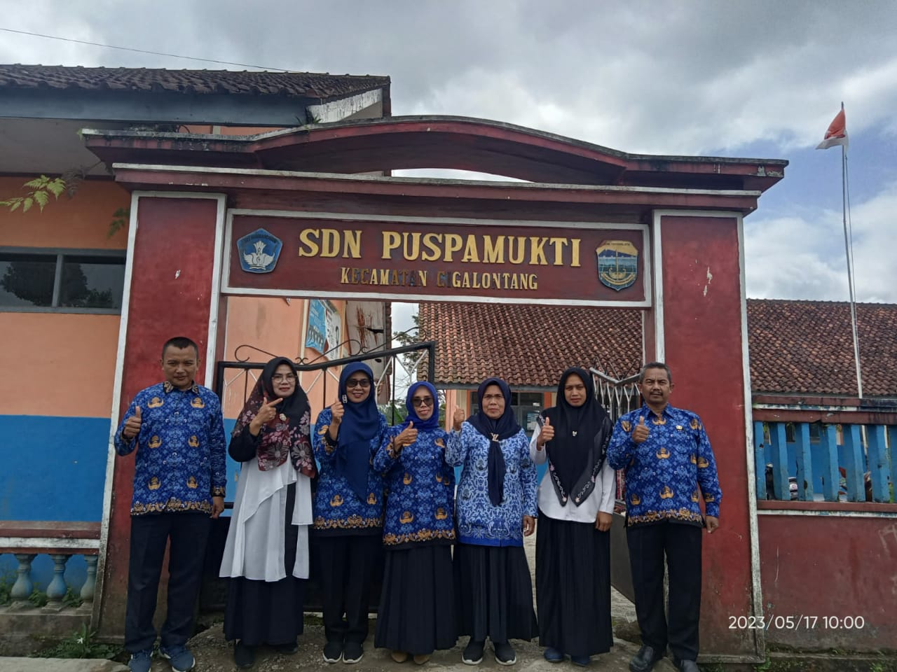

Sambutan Kepala Sekolah
Assalamu'alaikum Wr Wb
Puji syukur kami ucapkan kehadirat Allah SWT, karena atas limpahan rahmat serta petunjuk-Nyalah maka
website SDN Puspamukti ini dapat diluncurkan untuk peningkatan akses layanan informasi sekolah.
Website ini diharapkan dapat meningkatkan eksistensi SDN Puspamukti Singaparna dalam rangka
mengoptimalkan peran dan fungsinya sebagai satuan pendidikan yang berprilaku terpuji dan berprestasi
dalam menggapai masyarakat Kabupaten Tasikmalaya yang cerdas, kreatif, maju, sejahtera dan ihsan.
Akhirnya kami mengharapkan masukan dari berbagai pihak untuk Website ini agar kami terus belajar dan
mengupdate diri, terima kasih. Tetap semangat membuka cakrawala, mengasah asa, menggapai cita.
Wassalamu'alaikum Wr Wb
JAKA SUMPENA,S.Pd.,M.PD.
Visi
"Menbina diri Berbudi Pekerti yang terpuji, belajar aktif, kreatif, dan berprestasi, berdasarkan imtaq, serta iptek dan berkepribadian serta berakhlakul kharimah yang di landasi iman dan takwa”
Misi
1. Meningkatkan standar kopetensi guru melalui PMM.
2. Meningkatkan kegiatan ektrakurikuler.
3. Meningkatkan pembiasaan secara alami.
4. Pelaksanaan proses pembelajaran yang kreatif, inovatif, dan kondusif.
5. Meningkatkan kerja sama dengan orang tua murid / komite sekolah adalah tujuan Sekolah SD Negeri
PUSPAMUKTI.
Sejarah Sekolah
Sekolah ini didirikan pada tahun 1980 melalui program pemerintah yaitu program impres. Sekolah ini didirikan oleh pangajuan alm bapa HJ Dadang. Sekolah ini didirikan karena keprihatinan bapa haji dadang melihat banyak anak kecil yang menempuh jarak jauh untuk bersekolah di kampung lain. Ketika awal berdirinya SD ini hanya memiliki 3 orang pengajar. Setelah kurang lebih 3 tahun datang guru - guru baru yang berjumlah 3 orang sehingga akhirnya berjumlah 6 orang.
Dari tahun ketahun sekolah ini mengalami peningkatan dari segi bangunannya dan juga tenaga pendidiknya. Sampai saat ini ketika saya menjabat di SDN Puspamukti ini banyak piala dan penghargaan dari siswa - siswanya. Pengambilan nama pada sekolah ini diambil dari nama desa letak sekolah ini yaitu desa puspamukti. Saat ini SDN Puspamukti sudah mengalami perkembangan yang cukup pesat, dari mulai fasilitas bangunanya hingga cara guru dalam mengajar.
“Pendidikan adalah senjata paling mematikan di dunia, karena dengan pendidikan, Anda dapat mengubah dunia.”
– Nelson Mandela
Review Orang Tua

{{ testi.nama }}
{{ testi.jabatan }}“{{ testi.testimoni }}”
Kurikulum
Kurikulum Merdeka
Akreditasi
B
Jumlah Siswa
90
Alamat & Kontak
Alamat
Alamat : Kp. Ngenol RT/RW 010/005, Ds. Puspamukti, Kec. Cigalontang, Tasikmalaya
Kontak
Kontak : 089504487438
Email : sdnpuspamukti@gmail.com